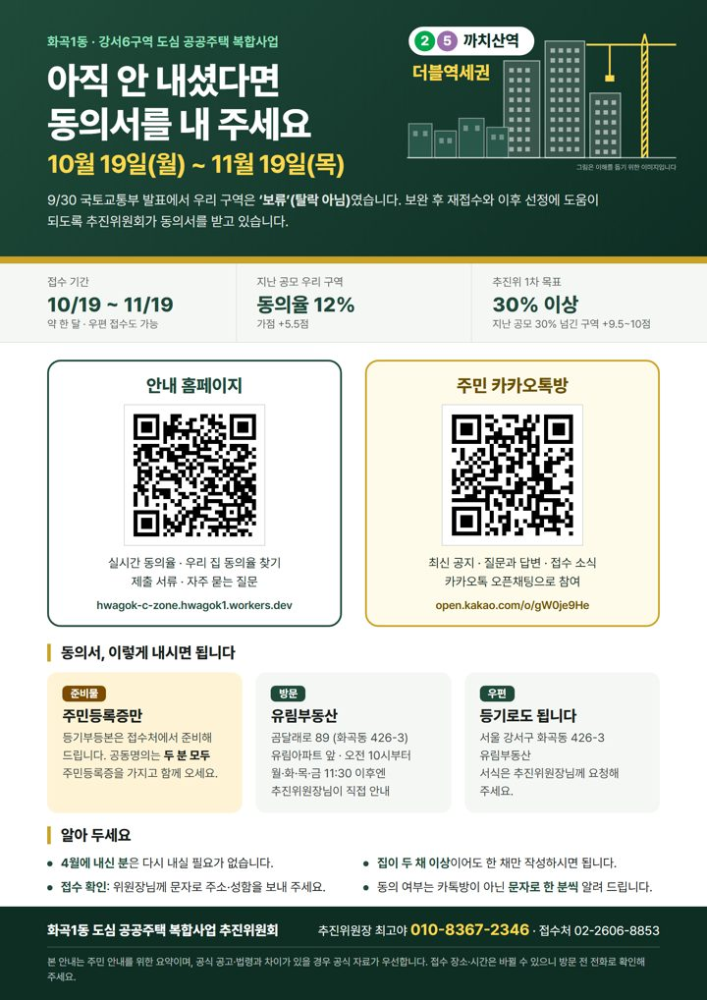
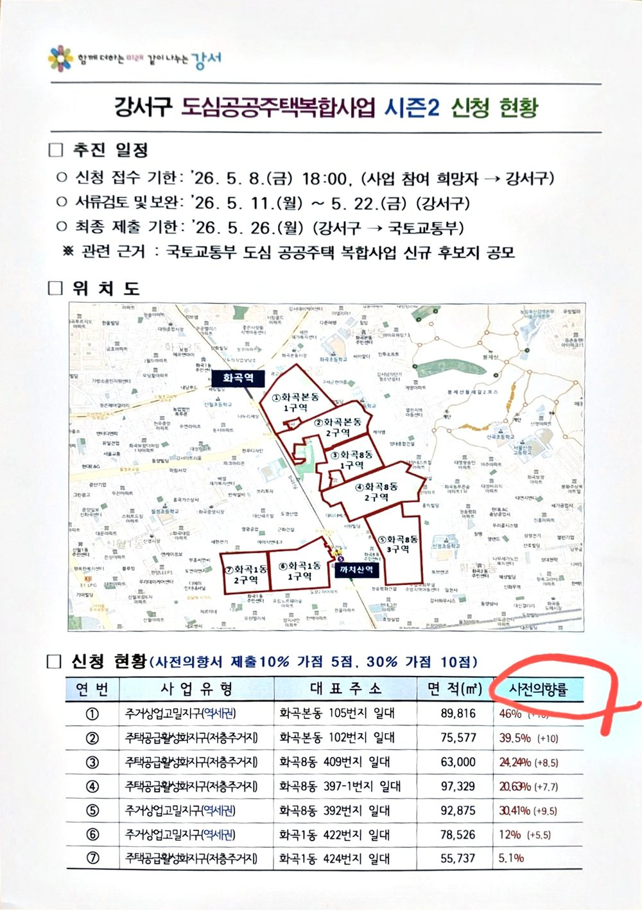

본인 확인
동의 의사가 실제 토지·건물 소유자 본인의 것임을 확인합니다. 주민등록상 성명·주소와 등기부상 명의를 대조해 확인합니다.
역세권 도심 공공주택 복합사업
우리 구역의 보완 후 재접수에 도움이 되고, 이후 선정되더라도 도움이 될 수 있도록 공모용 동의서를 재모집합니다. 10/19(월) 오전 10시부터 유림부동산에서 받습니다.
동의서, 이렇게 하시면 됩니다
유림부동산 · 곰달래로 89 (화곡동 426-3)
유림아파트 앞, 화곡1동 주민센터 가는 버스길 가
네이버 지도 →

이웃에게 나눠 줄 전단 컬러·흑백 인쇄용 PDF와 카톡 공유 이미지 QR 코드로 홈페이지와 주민 카톡방에 바로 들어올 수 있습니다. 내려받아 인쇄하거나 카톡으로 보내 주세요. 전단 보기 · 내려받기 →우리 집 동의율 찾기
전체 동의율 불러오는 중…
지번(재산세 고지서·등기부)이나 건물 번호판의 도로명 주소를 넣으세요. 집집마다의 동의 여부는 나오지 않고, 그 구역 전체의 동의율만 보여 드립니다. 번지별 동의 현황 전체 보기 →
지난 공모 사전의향률 · 강서구청 자료
우리 구역(⑥ 화곡1동 422번지 일대)은 12%로 가점 +5.5점이었습니다. 30%를 넘긴 구역은 +9.5~10점을 받았습니다.

누르면 크게 볼 수 있습니다 · 2026. 5. 8. 신청 마감 기준
지난 공모 12% → 지금 집계 중 (지난 공모 때 내신 분 포함) · 1차 목표 30% 이상
사전의향률만으로 선정이 정해지지는 않습니다. 국토부는 노후도 등 법정 요건, 사업성, 주민 의향률을 종합해 심사했다고 밝혔습니다.
왜 ‘보류’이고, 왜 동의율이 목표인가
위 자료에서 의향률이 24~40%였던 강서구 다른 구역 3곳(②③⑤)은 탈락했는데, 12%였던 우리 구역은 ‘보류’(탈락 아님)가 되었습니다.
구역계 보완 여부는 아직 확정된 것이 없습니다. 투자·매매를 권하는 글이 아닙니다. 추진위 판단 자세히 · 블로그 분석 자세히
봉사자를 모십니다. 오전 10시~12시에는 두 분 이상, 낮 12시 이후에는 가능하신 시간에 나와 주시면 큰 도움이 됩니다. 동의서는 받는 방법을 알고 받아야 하므로 사전 안내를 받으셔야 합니다. 참여 가능하신 시간을 주민 카톡방에 남겨 주시면 감사하겠습니다.
이웃에게 전단을 나눠 주실 분은 배포용 전단 내려받기에서 컬러·흑백 인쇄용 PDF와 카톡 공유 이미지를 받으실 수 있습니다.
9/30 후보지 발표에서 우리 구역(강서6)은 ‘보류’로 안내되었습니다 (탈락 아님). 내년 상반기에 추가 공모가 예정되어 있습니다. 동의율 30% 이상을 1차 목표로 하고 있습니다. (지난 공모 12%) 번지별 동의 현황 보기
지난 국토교통부 공모에 강서구에서는 화곡동 일대 7개 구역이 신청했습니다. 강서구청이 정리한 신청 현황을 보면 사전의향률이 높을수록 심사 가점이 커졌습니다. 우리 구역(⑥)은 12%로 +5.5점, 30%를 넘긴 구역은 +9.5~10점이었습니다.
| 구역 · 대표 주소 | 사전의향률 | 가점 |
|---|---|---|
| ① 화곡본동 1구역화곡본동 105번지 일대 | 46% | +10 |
| ② 화곡본동 2구역화곡본동 102번지 일대 | 39.5% | +10 |
| ③ 화곡8동 1구역화곡8동 409번지 일대 | 24.24% | +8.5 |
| ④ 화곡8동 2구역화곡8동 397-1번지 일대 | 20.63% | +7.7 |
| ⑤ 화곡8동 3구역화곡8동 392번지 일대 | 30.41% | +9.5 |
| ⑥ 화곡1동 1구역 · 우리 구역화곡1동 422번지 일대 | 12% | +5.5 |
| ⑦ 화곡1동 2구역화곡1동 424번지 일대 | 5.1% | – |
출처: 강서구청 「강서구 도심공공주택복합사업 시즌2 신청 현황」(신청 접수 2026. 5. 8. 마감) · 원본 자료는 첫 화면에 있습니다.
국토교통부는 서울 신규 후보지 11곳을 선정하고, 강서4·강서6·동작4 3곳은 보류했습니다. 보류는 탈락·취소가 아닙니다. 국토부 보도자료에 따르면 이번에 선정되지 않은 지역은 주민 의향률 확보, 지구계 변경 등 보완을 거쳐 재접수할 수 있습니다. 구체적인 보완 사항은 구청·LH 확인 후 이 페이지와 주민 카톡방에 안내드리겠습니다. (출처: 국토교통부 보도자료, 2026. 9. 30.)
보류 사유: 우리 구역은 주변에 길을 낼 수 있는 도로가 많아 진입로 여건이 좋습니다. 그래서 추진위는 진입로(출입구)는 문제가 아니라고 분석하고 있으며, 낮은 동의율(지난 공모 12%)을 보완할 필요가 있다고 봅니다. 국토부 보도자료에는 지역별 개별 사유가 공개되어 있지 않으며, 보도자료는 선정 심의 기준으로 ①노후도 등 법정 요건 ②사업성 ③주민 의향률을 종합 검토했다고 밝혔고, 선정에서 제외된 사업지는 주민 의향률 확보, 지구계 변경 등 보완 후 재접수할 수 있다고 안내했습니다.
진행 상황: 구역계(구역 경계) 보완 여부는 아직 확정된 것이 없습니다. 구청·LH 확인이 이루어지는 대로 이 페이지와 주민 카톡방에 안내드리겠습니다. 확인되지 않은 소문이나 전망에 의존하지 마시고 공식 안내를 기다려 주세요.
위의 추진위 자체 판단과 함께, 외부에서 우리 구역을 분석한 글이 있어 소개합니다. 아래는 참고 자료일 뿐이니, 직접 보시고 스스로 판단해 주세요. 투자나 매매를 권유하는 글이 절대 아닙니다. 다만 우리 구역 상황을 이해하는 데 도움이 될 것 같습니다.
도심공공주택복합사업을 다루는 네이버 블로그(재개발 전문 블로거)에서 우리 구역(강서6)을 분석한 글입니다. 요지는 이렇습니다. 지난 공모 때 우리 구역은 사전의향률이 12%로 낮았는데도 ‘보류’가 되었고, 의향률이 24~40%였던 강서구 다른 구역 3곳은 탈락했습니다(위 표 ②③⑤). 글쓴이는 이를 “의향률만 채우면 다른 조건은 괜찮다는 뜻”으로 해석합니다.
개인 분석이라 100% 신뢰할 수는 없습니다. 국토부가 구역별 사유를 공개한 것은 아니니, 긍정적인 면을 참고하는 정도로만 활용해 주세요. (출처: 네이버 블로그 ‘프린세스복’, 2026. 10. 24.)
추진위원장님 의견: 5년 넘게 우리 구역을 맡아 오시며 현장을 가장 잘 아시는 추진위원장님도 진입로 여건 등 여러 면에서 우리 구역이 다른 구역보다 유리하다고 보고 계십니다. 국토부가 구역별 사유를 공개하지 않아 최종 결과는 심사에서 정해지지만, 현장 판단과 외부 분석이 같은 방향을 가리키고 있습니다. 판단 근거는 정리되는 대로 이 페이지에 올리겠습니다.
그래서 지금 우리가 할 수 있는 일은 하나, 동의율을 높이는 것입니다. 아직 동의서를 내지 않으셨다면 11/19(목)까지 유림부동산에 주민등록증만 가져와 주세요. 4월에 내신 분은 다시 내지 않으셔도 됩니다.
이번에 선정되지 않은 지역은 주민 참여 의향률 확보, 구역(지구)계 변경 등 보완을 거쳐 다시 신청할 수 있으며, 국토부는 내년 상반기 수도권 대상 추가 공모를 예정하고 있습니다. 보완 과정에서 주민 여러분의 동의와 참여가 다시 중요해집니다. 주위에 널리 알려주세요.
참고: 이번에 선정된 11곳은 10월 중 주민설명회, 2027년 상반기 예정지구 지정, 2030년 하반기 착공을 목표로 합니다(국토부 목표 일정이며 확정 일정은 아닙니다). 강서구에서 선정된 곳은 강서01(화곡역 동측, 약 2,335호) 1곳으로, 우리 구역(강서6)과는 별개의 공모 신청지입니다.
아직 제출하지 않으신 분들만 이번 기간(11월 19일까지)에 주민등록증을 가져와 접수해 주세요. 4월에 내셨는지 기억이 안 나시면 추진위원장님께 문자로 주소(번지·호수)와 성함을 보내 주세요. 확인해 드립니다.
준비물(주민등록증 · 등기부등본은 접수처에서 준비)과 공유지분자·두 채 이상 안내는 위 중요 공지에서 확인해 주세요. 아래는 서류별 설명입니다.
주민등록번호 뒷자리(7자리)는 가려도 됩니다
제출 아닌 확인용 · 접수처(유림부동산)에서 준비해 드리니 따로 떼어 오지 않으셔도 됩니다
현장에 준비되어 있습니다 · 원본 수기 작성만 인정 (복사본 불가) · 도장·인감 없이 지장(손도장)을 찍습니다
현장에서 작성 · 공모 신청 목적 외 사용되지 않음
번거로우실 수 있지만, 다음 네 가지 이유로 필요합니다.
동의 의사가 실제 토지·건물 소유자 본인의 것임을 확인합니다. 주민등록상 성명·주소와 등기부상 명의를 대조해 확인합니다.
신분증과 등기부 명의를 확인해 제3자가 대신 작성하는 일을 막습니다. 훗날 동의 여부 분쟁 시 객관적 증거가 됩니다.
동의서가 정확히 작성되어야 제출 후 보완 요청이나 재방문 없이 한 번에 마무리됩니다.
장기간 진행되는 사업 특성상, 절차적 정당성을 입증할 자료가 보존되어야 사업 전체의 안정성이 확보됩니다.
제출하신 신분증 사본과 동의서는 공모 신청 목적 외에는 사용되지 않으며, 관련 법령에 따라 안전하게 보관·관리됩니다. 보관 기간·파기 시점·열람 권한 등 자세한 사항은 추진위원회로 문의해 주시기 바랍니다.
화곡1동에서 추진 중인 도심 공공주택 복합사업의 기본 정보입니다.
붉은 점선 안쪽이 본 사업의 대상 구역입니다. 첫 화면 우리 집 동의율 찾기에서 지번이나 도로명 주소를 찾은 뒤 ‘구역도에서 위치 보기’를 누르시면 이 지도에 표시됩니다.

첫 화면 우리 집 동의율 찾기에 지번이나 도로명 주소를 넣으면 구역 안인지 알려 드립니다.
등기부등본은 접수처에서 준비해 드립니다. 제출 서류 보기
현장에서 의향서와 동의서를 쓰고 지장(손도장)을 찍습니다. 도장·인감은 필요 없습니다. 위치·시간 보기
본인 필지가 구역에 포함되는지 불분명하시면 아래 연락처로 문의해 주시기 바랍니다. 큰 지번에 가려 표기가 안 된 경우도 포함된 구역일 수 있습니다.
10/19(월)부터 공모용 동의서는 유림부동산에서 접수합니다. 궁금한 점은 추진위원장님(010-8367-2346)께 문의해 주세요. (접수처 유림부동산 02-2606-8853)
서울 강서구 곰달래로 89 (화곡동 426-3)
까치산역 3번 출구에서 약 460m · 유림아파트 앞쪽
지도에서 보기등기 우편으로 서울 강서구 화곡동 426-3 유림부동산에 보내 주시고, 연락처는 최고야 010-8367-2346으로 적어 주세요. 의향서·동의서 서식은 추진위원장님께 요청하시면 받으실 수 있습니다.
문의: 추진위원장님 010-8367-2346
주민분들께서 실제로 문의하신 내용을 모아 정리했습니다. 항목을 누르시면 내용이 펼쳐집니다.
11/19 마감 전까지 주민 동의를 모으려면 많은 손길이 필요합니다. 아래 분야 중 가능한 것으로 도움 주시면 큰 힘이 됩니다. (중복 지원 가능)
주민분들께 사업을 알리고 참여를 독려하는 업무. 퇴근 후 전화 봉사도 가능합니다.
유림부동산에서 방문하시는 분들의 동의서 접수 및 안내를 돕는 업무입니다.
직접 세대를 방문하여 동의서를 수령하고 설명드리는 업무입니다.
활동 기간 · 10/19(월)부터 11/19(목)까지 · 문의 · 최고야 추진위원장님 010-8367-2346 · 전단 · 배포용 전단 내려받기
홍보물 인쇄·우편비, 설명회 대관료, 사무용품 등 운영 실비를 위한 자발적 후원입니다.
궁금한 점은 아래 중 편한 곳으로 문의해 주시기 바랍니다.
문의 · 추진위원장님
최고야
010-8367-2346접수처 · 유림부동산
곰달래로 89
02-2606-8853주민 단톡방 참여하기
비밀번호1016 카톡에서 ‘참여코드’를 물으면 이 번호를 넣어 주세요.
최신 공지, 접수 현황, 질문과 답변을 실시간으로 받아보실 수 있습니다.
건의사항 남기기 (익명)
홈페이지나 사업 진행에 대한 의견을 남겨 주세요. 당장 다 반영하지는 못하더라도 하나씩 차근차근 개선하겠습니다.